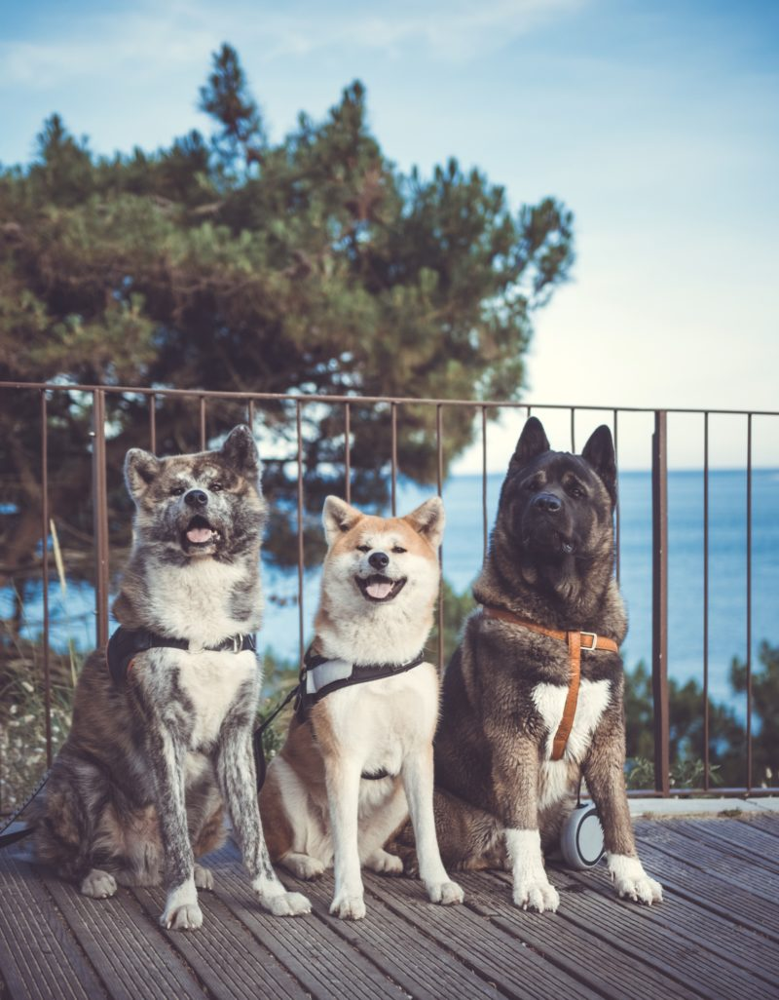
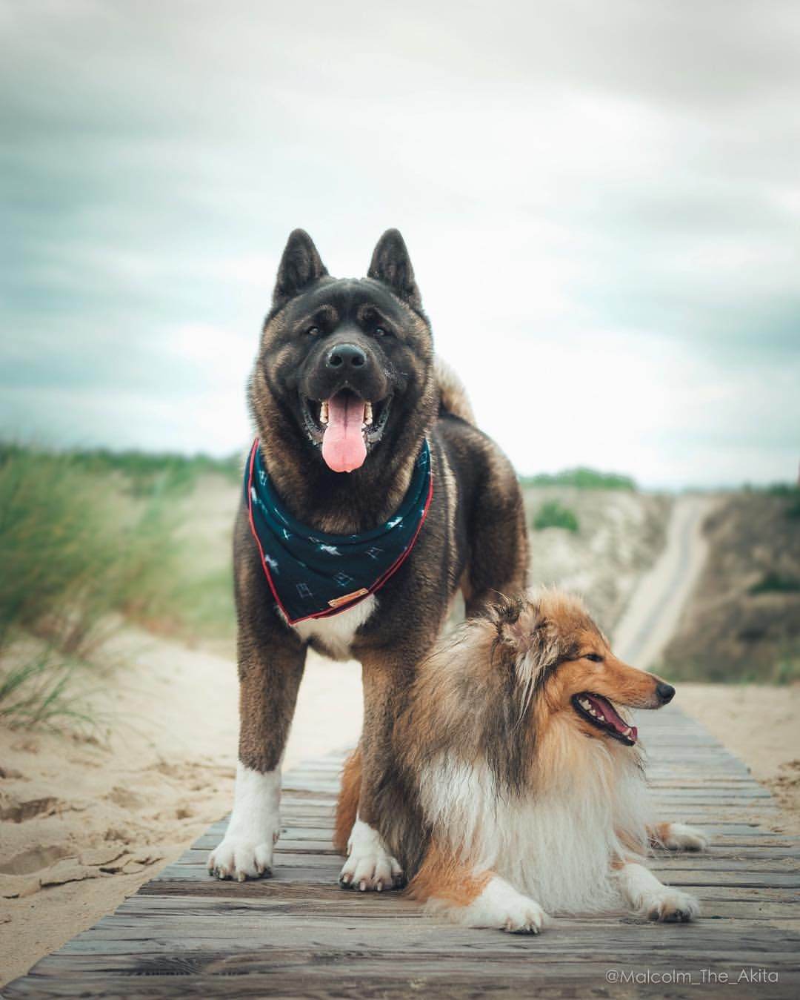
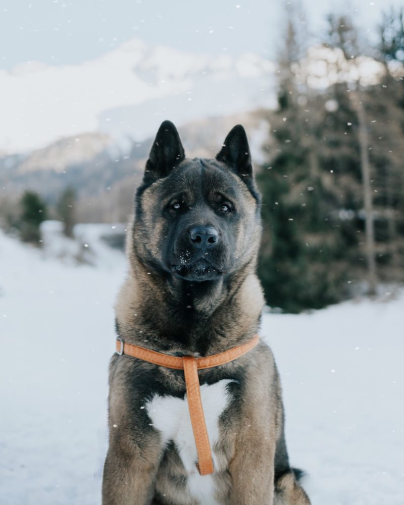

Какво трябва да знаем, ако искаме да си вземем Акита
Здравейте любители на кучета, днес ще поговорим за особеностите на Акита! В тази статия ще се опитам да ви дам възможно най-много информация как да живеете в хармония с породата. Смятам да споделя с вас моя опит като собственик на Акита. Всичко това, за да ви осигури възможно най-добрата помощ, ако някога планирате да придобиете акита или вече имате достатъчно късмет да имате такава.Японските кучета очевидно са сред новите модерни кучета. Дори и инфлуенсърите са фенове на красивите им лица. Породата става все по-известна. До преди няколко години никой не знаеше кои са те, днес все по-често се случва хората да ги разпознават. Следователно общественото запознаване с характера на тези кучета е необходимо, за да се избегне изоставяне. ...
Ако възнамерявате да си вземете акита, препоръчвам ви първо да се информирате за породата и нейните характеристики. Търсенето в интернет е добър начин да се разберат основните моменти, но внимавайте за многото сайтове, които обобщават породата твърде бързо и някои,които може да се окажат неверни. Няма нищо по-добро от Facebook групи, за да съберете препоръки от собствениците, да задавате вашите въпроси и т.н. Тези групи обикновено са пълни с ентусиасти и ценители на породата, които ще могат да ви помогнат при вашето изследване и които ще могат да дадат ценни съвети.
Имайте предвид, че кучето ви със сигурност ще бъде на каишка през повечето време по време на разходки Припомняме, че с Акита не можете да бъдетр сигурни, че вашето куче ще се върне при вас, особено ако е решило да ловува дивеч или види друго куче. Непоносимостта към други кучета на повечето Aкити бързо ще ви накара да осъзнаете, че вашето куче ще трябва да бъде държано на каишка, ако искате да избегнете неприятности. Изключения съществуват. Но нулевият риск не съществува, трябва да го запомните и да сте готови да знаете как да спрете яростната акита по време на разпра с куче.
Не претендирайте за победа, докато кучето ви не е пълнолетно: Акита на възраст над 3 години, но защо 3 години? Развитието на големите породи отнема много повече време от другите, както физически, така и психически. Кученцето Акита може да бъде истинска мечка, тъй като някои от тях вече могат да имат истински характер на Акита и зле понасят други от най-ранна възраст. Но има много собственици, които твърдят: „Моята Акита толерира всички кучета!„ Това сме свикнали да виждаме редовно в групите. Но когато попитате възрастта на участващите кучета, те едва ли надвишават 2 години. Същите тези хора, чиито хвалби вече не чуваме, когато акитата им порасне. Ето защо е важно да се разбере, че акита може да се промени драстично, дори с известно обучение и социализация. Промените настъпват често на 10-месечна възраст, когато характерът на кучето започва да се проявява и вече не е толкова сладък и скромен. Не забравяйте, че вашето кученце ще порасне! Мъжът Акита Ину обикновено тежи в диапазона от 35-40 кг и теглото му е по-забележимо, ако например вашето куче е усетило нещо интересно.
„Ами ако взема двама мъже (или две жени) и те растат заедно? Отговорът е: на ваш риск, но коко жалка да изкушавате дявола за ваше лично удоволствие ... Акита може да расте с куче, да живее в идеално съжителство години наред и в крайна сметка да не се разбира с него в един момент. Истинската загриженост е, че Акита, който вече няма да толерира друго куче, не просто ще се опита да го избегне ... той ще влезе в пряк контакт и няма да се поколебае да стигне доста далече. Тези думи може да са сурови, шокиращи, са точките, които трябва да знаете за породата. Не ги приемайте за кървави зверове, те са просто примитивни кучета.
На няколко пъти открих, че кучетата, които живеят в градини и следователно излизат много по-малко от тези в апартаментите, така че е страхотно да можете да ходите с другите и да работите върху социализация. Избирайте доста тихи места,които не се посещават от свободни кучета, защото си представете, че може да бъде грубо, ако куче без каишка се натъкне на група Акити. Но бъдете сигурни, рядко се срещат кучетата, които бързат, без да се замислят върху глутница.
 Тази
порода е очарователна, защото ни учи всеки ден и техните особености са не само недостатъци, дори ако могат да
бъдат за някои.
Те са горди кучета, с голямо присъствие и необикновена интелигентност.
Разбира се, ако търсите куче, което е лесно за дресировка, много послушно, с което можете да ходите без каишка
или да спортувате ...
по-добре изберете друга порода, която ще ви подхожда повече и която подлежи на по-лесна дресировка от Акита.
От друга страна, ако гореспоменатите точки не ви плашат и имате време
да се посветите на това, акита ще ви зарадва. Те със сигурност са примитивни кучета със специален характер, но
са също и верни и смели
кучета. Не се отказвайте при най-малката трудност, някои кучета ще бъдат по-лесни за обучение, отколкото
други, но можете да получите
помощ и от професионалисти, ако е необходимо.
Със сигурност породата ще става все по-известна, нямаме избор, но би било важно хората също да знаят,
че те са не само красиви плюшени мечета.
Тази
порода е очарователна, защото ни учи всеки ден и техните особености са не само недостатъци, дори ако могат да
бъдат за някои.
Те са горди кучета, с голямо присъствие и необикновена интелигентност.
Разбира се, ако търсите куче, което е лесно за дресировка, много послушно, с което можете да ходите без каишка
или да спортувате ...
по-добре изберете друга порода, която ще ви подхожда повече и която подлежи на по-лесна дресировка от Акита.
От друга страна, ако гореспоменатите точки не ви плашат и имате време
да се посветите на това, акита ще ви зарадва. Те със сигурност са примитивни кучета със специален характер, но
са също и верни и смели
кучета. Не се отказвайте при най-малката трудност, някои кучета ще бъдат по-лесни за обучение, отколкото
други, но можете да получите
помощ и от професионалисти, ако е необходимо.
Със сигурност породата ще става все по-известна, нямаме избор, но би било важно хората също да знаят,
че те са не само красиви плюшени мечета.

С куче в планината
Здравейте любителите на кучетата, днес ще поговорим за подготовката, която е необходима преди да тръгнем с четириногия си приятел на снежно приключение. Ще ви помогнем с избора какво да сложите в куфара му, за да е по приятно и удобно пътуването ви.Какво да вземем?
Не забравяйте да проверите предварително дали местата, в които искате да отседнете приемат кучета. Би било жалко да се наложи да сменяте хотела, след като стигнете до дестинацията си. Ето и аксесоарите, които да планирате за престой в планината с вашето животно: ...
1. Естествено, не забравяйте да вземете удобно оборудване за вашето куче, особено ако искате да правите дейности в снега.
2. Не забравяйте да вземете купа и вода, дори и да не е гореща.
3. Подгответе лапите на кучето си преди планината със защитен и укрепващ спрей.
Винаги вземайте възстановяващ балсам, много мазен, за да подхраните лапите на кучето си след снежен ден.
Не забравяйте да изплакнете лапите с чиста вода.
4. Оборудвайте кучето си с дреха, ако не харесва студа или козината му не е подходяща за студа.
(Далматинци, хрътки, много породи са по-удобни за покриване) Дъждобранът може да бъде добър начин да запазите кучето си сухо, ако се сблъскате с него в дъждовен ден, това ще му попречи да настине. Също така не забравяйте да вземете кърпа, за да го изсушите, ако е необходимо.
5. Лакомства за малкото му удоволствие и храната му.
6. Здравната карта, в случай че бъдете помолени да я представите.
7. Наморник: ако ползвате влак или самолет или ако трябва да вземете обществен транспорт.
8. Одеяло или килим, ако кучето ви обича да спи на нещо уютно.
9. Аптечка.
10. Торбички за изпражнения.